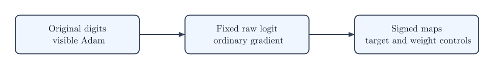
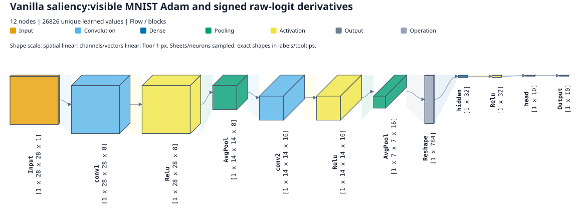
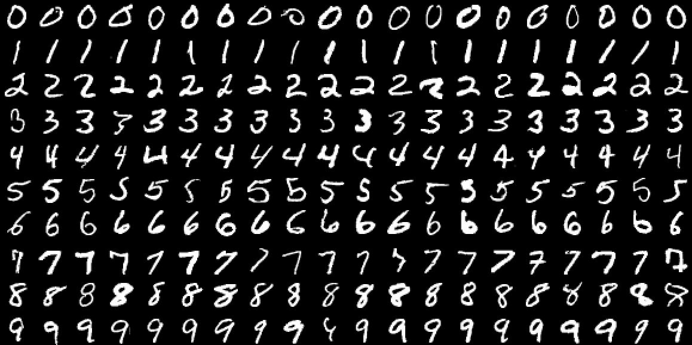
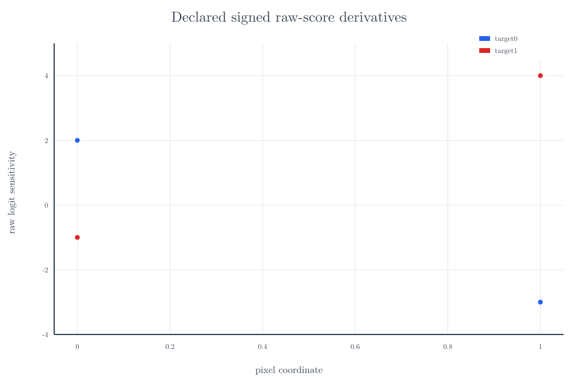
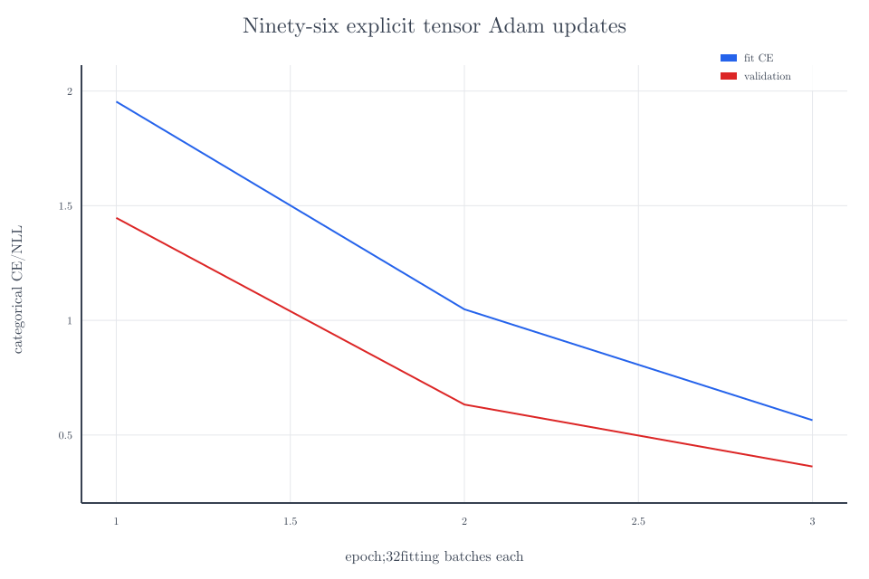
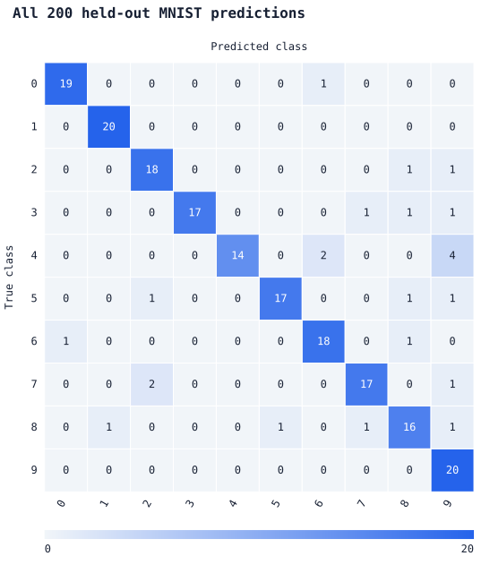
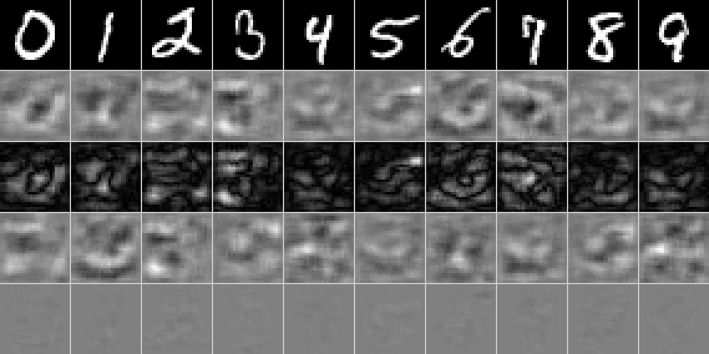

Vanilla saliency:visible MNIST Adam and signed raw-logit derivatives
Abstract
An image classifier assigns a category,but its local response to individual pixels remains hidden. Train a small MNIST CNN with every tensor Adam update visible,then inspect signed raw-logit derivatives with fixed targets and initialization controls on genuine held-out digits.
Source example: examples/cpp/source/nn/1_convolutional_neural_networks/1.11_interpretability/vanilla_saliency.cpp.
The method
For fixed class c,the first-order response is s_c(x+delta)-s_c(x) approximately inner_product(gradient_x s_c,delta). Signed coordinates distinguish local increases from decreases. The gradient is computed for the raw categorical score,not a probability or a fitting loss.
A two-pixel fixture makes sign and batch scaling hand-checkable. The shared CNN uses genuine MNIST observations,explicit tensor Adam and validation-only selection;fresh restoration precedes every held-out metric and explanation map.
The concept diagram below is drawn by dm::graphics::Diagram. Its editable C++
source is the complete block below; regeneration uses the same datamunge toolchain
as the numerical examples. Exports consume the saved local SVG.
#include <dm/dm.hpp>
int main() {
std::filesystem::create_directories("build");
dm::graphics::Diagram diagram;
diagram.node("n0", {0.0, 0}, "Original digits\n visible Adam");
diagram.node("n1", {5.2, 0}, "Fixed raw logit\n ordinary gradient");
diagram.node("n2", {10.4, 0}, "Signed maps\n target and weight controls");
diagram.edge("n0", "n1").edge("n1", "n2");
diagram.save_svg("build/vanilla_saliency_concept.svg");
}
Executed tensor architecture
The diagram shows the forward MNIST CNN that the attribution or feature-optimization method inspects; the attribution algorithm is explained separately.
This figure executes the inference configuration shown in the code, using a zero-valued shape probe without fitting or loading a checkpoint. Named stage boundaries group whole subgraphs where available; other nodes retain functional-layer detail. Exact batch-inclusive shapes and reachable parameter totals come from the trace. Shared linear scales map spatial dimensions and channel counts to blocks; the one-pixel visibility floor is disclosed in the legend. Labels use compact monospace text, rotate counterclockwise and sit beside their own glyphs. Arrows flow left to right; wide diagrams scroll at native size on the website.
#include <dm/dm.hpp>
int main() {
namespace n = dm::nn;
namespace m = n::models;
n::set_num_threads(2);
std::filesystem::create_directories("build");
n::ParameterStore p(1103);
n::Module architecture_model(
[&](const n::Tensor& image) { return m::SaliencyCnn(p, image).logits; },
"Vanilla saliency:visible MNIST Adam and signed raw-logit derivatives");
n::ModelPlotOptions options;
options.style = n::ModelPlotStyle::Flow;
options.detail = n::ModelPlotDetail::Blocks;
options.labels = {.type = n::ModelPlotLabel::NameAndShape, .size = 12, .wrap = 24};
options.spacing = {.layer = 24, .lane = 12, .label = 8, .margin = 20};
options.sizing.spatial_size = 96;
options.sizing.channel_size = 42;
options.sizing.minimum_extent = 1;
options.opacity = .8;
const auto diagram = architecture_model.plot(n::zeros({1, 28, 28, 1}), options);
diagram.save_svg("build/vanilla_saliency_architecture.svg");
std::print(
"{} displayed nodes; {} reachable learned values.\n",
diagram.nodes().size(),
diagram.parameter_count());
}12 displayed nodes; 26826 reachable learned values.

Original MNIST observations and the shared classifier
The pinned cache contains1000fitting,200validation and200official-test MNIST
images,balanced across all ten digits. Selection seed1931and original source
row IDs are retained in saliency/manifest.json;official test IDs are offset60000.
Original28x28bytes becomeFloat32tensors/255. The loader checks all source IDs,
class counts and bytewise duplicate observations across partitions. This small
balanced subset is not the official full training or full test benchmark.
The shared model has26826learned values/eight tensors:5x5SAME8ReLU,VALIDavg2, 3x3SAME16ReLU,VALIDavg2,flatten784,FC32ReLU,linear10head. Convolutions use HeUniform,dense layers Glorot,biases0,noBN/dropout. Later interpretability reports restore exactly this selected classifier and its actual initialization. No method is evaluated on different secretly retrained weights.
Show every one of the200actual held-out images,then retain a deterministic first occurrence of each digit for the gradient comparison gallery.
#include <dm/dm.hpp>
int main() {
namespace n = dm::nn;
namespace m = n::models;
std::filesystem::path cache;
if (const auto *p = std::getenv("DATAMUNGE_DATA_DIR"))
cache = p;
else if (const auto *p = std::getenv("XDG_CACHE_HOME"))
cache = std::filesystem::path(p) / "datamunge/datasets";
else
cache = std::filesystem::path(std::getenv("HOME")) / ".cache/datamunge/datasets";
dm::datasets::prepare_example_data("mnist-assets", cache.string());
const auto pools = m::LoadSaliency(cache / "saliency");
const auto &fit = pools[0];
const auto &validation = pools[1];
const auto &test = pools[2];
n::save_image_grid(test.images, "build/vanilla_saliency_data.png", 20, 0, 1, 2, 0, 2);
std::print("| pool | original observations | class counts0..9 | original ID range "
"|\n|---|---:|---|---|\n");
for (int split = 0; split < 3; ++split) {
const auto &d = pools[split];
const auto counts = n::sum(n::one_hot(d.labels, 10), {0});
std::print("| {} | {} | {} | {}..{} |\n",
split == 0 ? "fit"
: split == 1 ? "validation"
: "held-out",
d.images.size(0), counts, n::min(d.source).item(), n::max(d.source).item());
}
}| pool | original observations | class counts0..9 | original ID range |
|---|---|---|---|
| fit | 1000 | float32[10] [100, 100, 100, 100, 100, 100, 100, 100, 100, 100] | 13..59904 |
| validation | 200 | float32[10] [20, 20, 20, 20, 20, 20, 20, 20, 20, 20] | 356..59686 |
| held-out | 200 | float32[10] [20, 20, 20, 20, 20, 20, 20, 20, 20, 20] | 60000..69986 |

A hand-checkable signed raw-score derivative
For a linear raw score s=2*x0-3*x1,the gradient is[2,-3]regardless of pixel values. A SUM across two independent images reproduces that derivative in each row;a batch MEAN would halve it. Switching the fixed target switches the head coefficients. Softmax gradients,loss gradients,gradient-times-input and guided gates are different quantities;none enters vanilla saliency here.
#include <dm/dm.hpp>
int main() {
namespace n = dm::nn;
namespace m = n::models;
const auto x = n::from_vector(std::vector<float>{.2f, .7f, .6f, .1f}, {2, 1, 2, 1});
const auto w = n::from_vector(std::vector<float>{2, -1, -3, 4}, {2, 2});
auto forward = [&](const n::Tensor &a) {
return n::matmul(a.reshape({2, 2}), w);
};
const auto targets = n::zeros({2}, n::DType::Int32);
const auto gradient = m::VanillaInputGradient(forward, x, targets, 2);
const auto alternative =
m::VanillaInputGradient(forward, x, n::ones({2}, n::DType::Int32), 2);
std::print("Declared input {},raw target0gradient {},target1gradient {}.\n",
x.reshape({2, 2}), gradient.reshape({2, 2}), alternative.reshape({2, 2}));
auto plot = dm::graphics::RPlot::create();
plot.points({0, 1}, n::select(gradient.reshape({2, 2}), 0, 0).to_vector<double>(), "target0",
{37, 99, 235})
.points({0, 1}, n::select(alternative.reshape({2, 2}), 0, 0).to_vector<double>(),
"target1", {220, 38, 38})
.title("Declared signed raw-score derivatives")
.x_label("pixel coordinate")
.y_label("raw logit sensitivity")
.y_limits(-4, 5);
plot.save_svg("build/vanilla_saliency_fixture.svg");
}Declared input float32[2, 2] [[0.2, 0.7], [0.6, 0.1]],raw target0gradient float32[2, 2] [[2, -3], [2, -3]],target1gradient float32[2, 2] [[-1, 4], [-1, 4]].

All96explicit tensor Adam updates
Warm all eight learned tensors before Adam(.001). Parameter seed1103,batch order1109,three epochs,batch32,including the last eight fitting records per epoch:96updates. The visible initial eight-record gradient probe performs no update. Validation NLL selects weights;test observations never choose the epoch. Save both initial and selected arrays for fixed-weight explanation controls.
#include <dm/dm.hpp>
int main() {
namespace n = dm::nn;
namespace m = n::models;
n::set_num_threads(2);
std::filesystem::path cache;
if (const auto *p = std::getenv("DATAMUNGE_DATA_DIR"))
cache = p;
else if (const auto *p = std::getenv("XDG_CACHE_HOME"))
cache = std::filesystem::path(p) / "datamunge/datasets";
else
cache = std::filesystem::path(std::getenv("HOME")) / ".cache/datamunge/datasets";
dm::datasets::prepare_example_data("mnist-assets", cache.string());
const auto pools = m::LoadSaliency(cache / "saliency");
const auto &fit = pools[0];
const auto &validation = pools[1];
const auto &test = pools[2];
n::ParameterStore p(1103);
{
n::NoGradGuard guard;
m::SaliencyCnn(p, n::zeros({1, 28, 28, 1}));
}
auto predict = [&](const n::Tensor &images) {
n::NoGradGuard guard;
std::vector<n::Tensor> parts;
for (std::int64_t start = 0; start < images.size(0); start += 32)
parts.push_back(
m::SaliencyCnn(p, n::slice_axis(images, 0, start,
std::min<std::int64_t>(start + 32, images.size(0))))
.logits);
return n::concat(parts, 0);
};
n::NamedTensors initial_arrays;
for (std::size_t i = 0; i < p.size(); ++i)
initial_arrays.push_back({p.names()[i], p.parameters()[i].clone()});
n::save_npz("build/vanilla_saliency_initial.npz", initial_arrays);
const auto initial = m::ScoreSequenceClassifier(predict(fit.images), fit.labels).nll;
const auto untrained = predict(test.images);
const auto probe = m::SaliencyRows(fit, {0, 1, 2, 3, 4, 5, 6, 7});
const auto gradients = n::grad(
n::sparse_softmax_cross_entropy(m::SaliencyCnn(p, probe.images).logits, probe.labels),
p.parameters());
for (const auto &g : gradients)
if (!n::all(n::is_finite(g)).item<bool>() || n::sum(n::square(g)).item() <= 0)
return 1;
n::OptimizerConfig config;
config.kind = n::OptimizerKind::Adam;
n::Optimizer adam(p, .001, config);
n::BatchOrder order(1000, 32, 1109);
double best = INFINITY;
int selected = 0, updates = 0;
std::vector<n::Tensor> history;
std::print("| epoch | fitting CE | validation NLL |\n|---:|---:|---:|\n");
for (int epoch = 1; epoch <= 3; ++epoch) {
order.begin_epoch();
auto average = n::zeros({}, n::DType::Float64);
for (;;) {
const auto rows = order.next();
if (rows.empty())
break;
const auto d = m::SaliencyRows(fit, rows);
const auto loss =
n::sparse_softmax_cross_entropy(m::SaliencyCnn(p, d.images).logits, d.labels);
average = average + loss.detach().to(n::DType::Float64) * double(rows.size()) / 1000.;
adam.step(n::grad(loss, p.parameters()));
++updates;
}
const auto val =
m::ScoreSequenceClassifier(predict(validation.images), validation.labels).nll;
if (val.item() < best) {
best = val.item();
selected = epoch;
n::NamedTensors arrays;
for (std::size_t i = 0; i < p.size(); ++i)
arrays.push_back({p.names()[i], p.parameters()[i]});
n::save_npz("build/vanilla_saliency_best.npz", arrays);
}
history.push_back(n::stack({average, val}, 0));
std::print("| {} | {:.6f} | {:.6f} |\n", epoch, average.item(), val.item());
}
for (const auto &[key, value] : n::load_npz("build/vanilla_saliency_best.npz"))
p.set(key, value.clone());
const auto fitted = m::ScoreSequenceClassifier(predict(fit.images), fit.labels).nll;
n::save_npz("build/vanilla_saliency_outputs.npz",
{{"logits", predict(test.images)}, {"untrained", untrained}});
std::print(
"{}explicit Adam updates;selected {},validation {:.6f};fixed fitNLL {:.9f}->{:.9f}.\n",
updates, selected, best, initial.item(), fitted.item());
const auto h = n::stack(history, 0);
auto plot = dm::graphics::RPlot::create();
plot.lines(n::arange(1, 4).to_vector<double>(), n::select(h, 1, 0).to_vector<double>(),
"fit CE", {37, 99, 235})
.lines(n::arange(1, 4).to_vector<double>(), n::select(h, 1, 1).to_vector<double>(),
"validation", {220, 38, 38})
.title("Ninety-six explicit tensor Adam updates")
.x_label("epoch;32fitting batches each")
.y_label("categorical CE/NLL");
plot.save_svg("build/vanilla_saliency_training.svg");
}| epoch | fitting CE | validation NLL |
|---|---|---|
| 1 | 1.953881 | 1.446761 |
| 2 | 1.048198 | 0.632868 |
| 3 | 0.564541 | 0.362580 |
96explicit Adam updates;selected 3,validation 0.362580;fixed fitNLL 2.350038606->0.392509567.

Fresh restoration and complete held-out classifier errors
Check all200held-out logits against the saved selected model,repeated inference, a single-image query(with5e-6Float32logit tolerance)and all eight immutable learned arrays. The coarse7x7 intensity memory1NN reference has no learned parameters and no optimizer; its descriptor and pairwise distances use Double tensors. Report every class recall and complete confusion counts,not only aggregate accuracy.
#include <dm/dm.hpp>
int main() {
namespace n = dm::nn;
namespace m = n::models;
n::set_num_threads(2);
std::filesystem::path cache;
if (const auto* p = std::getenv("DATAMUNGE_DATA_DIR"))
cache = p;
else if (const auto* p = std::getenv("XDG_CACHE_HOME"))
cache = std::filesystem::path(p) / "datamunge/datasets";
else
cache = std::filesystem::path(std::getenv("HOME")) / ".cache/datamunge/datasets";
dm::datasets::prepare_example_data("mnist-assets", cache.string());
const auto pools = m::LoadSaliency(cache / "saliency");
const auto& fit = pools[0];
const auto& validation = pools[1];
const auto& test = pools[2];
n::ParameterStore p(1103);
{
n::NoGradGuard guard;
m::SaliencyCnn(p, n::zeros({1, 28, 28, 1}));
}
auto predict = [&](const n::Tensor& images) {
n::NoGradGuard guard;
std::vector<n::Tensor> parts;
for (std::int64_t start = 0; start < images.size(0); start += 32)
parts.push_back(
m::SaliencyCnn(
p,
n::slice_axis(images, 0, start, std::min<std::int64_t>(start + 32, images.size(0))))
.logits);
return n::concat(parts, 0);
};
for (const auto& [key, value] : n::load_npz("build/vanilla_saliency_best.npz"))
p.set(key, value.clone());
const auto before = p.flatten();
n::Tensor saved, untrained;
for (const auto& [key, value] : n::load_npz("build/vanilla_saliency_outputs.npz")) {
if (key == "logits")
saved = value;
if (key == "untrained")
untrained = value;
}
const auto logits = predict(test.images), single = predict(n::slice_axis(test.images, 0, 0, 1));
const auto parity = n::max(n::abs(logits - saved)),
batch = n::max(n::abs(single - n::slice_axis(logits, 0, 0, 1)));
if (parity.item() != 0 || n::max(n::abs(logits - predict(test.images))).item() != 0 ||
batch.item() > 5e-6 || before != p.flatten())
return 1;
std::print(
"Fresh restore/repeat {},single/batch {:.9g}within5e-6;all8learned arrays immutable.\n",
parity.item(),
batch.item());
const auto nearest = m::SaliencyNearest(fit, test);
std::print(
"| predictor | accuracy | macroF1 | NLL | all ten recalls "
"|\n|---|---:|---:|---:|---|\n");
for (const auto& [name, z] : std::vector<std::pair<std::string, n::Tensor>>{
{"learned", logits}, {"initial", untrained}, {"coarse1NN", nearest}}) {
const auto score = m::ScoreSensor(z, test.labels, 10);
std::print(
"| {} | {:.6f} | {:.6f} | {:.6f} | {} |\n",
name,
score.accuracy,
score.macro_f1,
score.nll,
score.recall);
}
// confusion_api_ replacement of the earlier generic heatmap.
const auto count = m::ScoreSequenceClassifier(logits, test.labels).confusion;
std::print("All100learned confusion counts {}.\n", count);
n::save_npz("build/vanilla_saliency_verification.npz",{{"truth",test.labels},{"prediction",n::argmax(logits,1)},{"counts",count}});
n::ConfusionMatrix::from_counts(count).save_svg(
"build/vanilla_saliency_confusion.svg", {.title = "All 200 held-out MNIST predictions"});
}Fresh restore/repeat 0,single/batch 0within5e-6;all8learned arrays immutable.
| predictor | accuracy | macroF1 | NLL | all ten recalls |
|---|---|---|---|---|
| learned | 0.880000 | 0.880701 | 0.440893 | [0.95, 1, 0.9, 0.85, 0.7, 0.85, 0.9, 0.85, 0.8, 1] |
| initial | 0.105000 | 0.056627 | 2.367046 | [0, 0, 0.1, 0.2, 0.2, 0.55, 0, 0, 0, 0] |
| coarse1NN | 0.840000 | 0.839519 | 1.621150 | [0.9, 1, 0.9, 0.8, 0.8, 0.65, 0.95, 0.85, 0.7, 0.85] |
All100learned confusion counts int64[10, 10] [[19, 0, 0, ..., 0, 0, 0], [0, 20, 0, ..., 0, 0, 0], [0, 0, 18, ..., 0, 1, 1], ..., [0, 0, 2, ..., 17, 0, 1], [0, 1, 0, ..., 1, 16, 1], [0, 0, 0, ..., 0, 0, 20]].

Validation selects epoch3,NLL.366006;fixed fitting inference NLL improves 2.350038605to.395236061. Held-out accuracy.88,NLL.443415 exceeds the actual initialization(.105accuracy)and coarse1NN(.84accuracy),but24of200digits are still wrong. Digit4recall is.7,so its six misses remain visible in the full confusion matrix. These maps explain this small model's local scores,including its errors;they do not validate the correctness of those scores.
Fixed targets,signed maps and actual initial-weight controls
Choose the first held-out observation of each true digit0..9without examining its gradient. The selected target is the learned top raw logit;the runner-up is fixed separately. Differentiate the SUM of selected raw logits with ordinary backpropagation,keeping target IDs fixed. The image scale is[0,1],so these are derivatives per unit normalized pixel,not per integer byte. No absolute-value, softmax or loss transform occurs before differentiation.
The gallery shares one absolute gradient peak across selected,runner and initial-weight derivatives. Signed values map negative-to-black,zero-to-grey, positive-to-white;the absolute map uses0black/peakwhite. Report all case IDs, true/target/runner classes,repeat/single-batch checks and a real-image central finite difference at the largest-magnitude first-image gradient coordinate.
#include <dm/dm.hpp>
int main() {
namespace n = dm::nn;
namespace m = n::models;
n::set_num_threads(2);
std::filesystem::path cache;
if (const auto *p = std::getenv("DATAMUNGE_DATA_DIR"))
cache = p;
else if (const auto *p = std::getenv("XDG_CACHE_HOME"))
cache = std::filesystem::path(p) / "datamunge/datasets";
else
cache = std::filesystem::path(std::getenv("HOME")) / ".cache/datamunge/datasets";
dm::datasets::prepare_example_data("mnist-assets", cache.string());
const auto pools = m::LoadSaliency(cache / "saliency");
const auto &fit = pools[0];
const auto &validation = pools[1];
const auto &test = pools[2];
n::ParameterStore p(1103);
{
n::NoGradGuard guard;
m::SaliencyCnn(p, n::zeros({1, 28, 28, 1}));
}
auto predict = [&](const n::Tensor &images) {
n::NoGradGuard guard;
std::vector<n::Tensor> parts;
for (std::int64_t start = 0; start < images.size(0); start += 32)
parts.push_back(
m::SaliencyCnn(p, n::slice_axis(images, 0, start,
std::min<std::int64_t>(start + 32, images.size(0))))
.logits);
return n::concat(parts, 0);
};
for (const auto &[key, value] : n::load_npz("build/vanilla_saliency_best.npz"))
p.set(key, value.clone());
std::vector<std::int64_t> chosen;
const auto labels = test.labels.to_vector<int>();
for (int digit = 0; digit < 10; ++digit) {
const auto it = std::find(labels.begin(), labels.end(), digit);
chosen.push_back(it - labels.begin());
}
const auto examples = m::SaliencyRows(test, chosen);
const auto z = predict(examples.images);
const auto sorted = n::argsort(z, true);
const auto targets = n::select(sorted, 1, 0).to(n::DType::Int32),
runners = n::select(sorted, 1, 1).to(n::DType::Int32);
const auto before = p.flatten();
auto forward = [&](const n::Tensor &x) {
return m::SaliencyCnn(p, x).logits;
};
const auto gradient = m::VanillaInputGradient(forward, examples.images, targets),
runner = m::VanillaInputGradient(forward, examples.images, runners);
n::ParameterStore random(1103);
{
n::NoGradGuard guard;
m::SaliencyCnn(random, n::zeros({1, 28, 28, 1}));
}
for (const auto &[key, value] : n::load_npz("build/vanilla_saliency_initial.npz"))
random.set(key, value.clone());
const auto initial_before = random.flatten();
const auto initial = m::VanillaInputGradient(
[&](const n::Tensor &x) {
return m::SaliencyCnn(random, x).logits;
},
examples.images, targets);
const auto repeated = m::VanillaInputGradient(forward, examples.images, targets),
single = m::VanillaInputGradient(forward, n::slice_axis(examples.images, 0, 0, 1),
n::slice_axis(targets, 0, 0, 1));
const auto repeat = n::max(n::abs(gradient - repeated)),
batch = n::max(n::abs(single - n::slice_axis(gradient, 0, 0, 1))),
target_delta = n::sum(n::abs(gradient - runner)),
weight_delta = n::sum(n::abs(gradient - initial));
const auto peak = n::max(n::stack({n::max(n::abs(gradient)), n::max(n::abs(runner)),
n::max(n::abs(initial))},
0))
.item();
const auto positive = n::sum(n::greater(gradient, 0.).to(n::DType::Int32)).item(),
negative = n::sum(n::less(gradient, 0.).to(n::DType::Int32)).item();
const int coordinate = n::argmax(n::abs(single).reshape({784}), 0).item<int>();
const auto axis = n::arange(0, 784, 1, n::DType::Int64);
const auto perturb =
n::equal(axis, coordinate).to(n::DType::Float32).reshape({1, 28, 28, 1}) * .001;
const auto image = n::slice_axis(examples.images, 0, 0, 1),
target = n::slice_axis(targets, 0, 0, 1);
const auto fd = (m::SaliencyScore(forward(image + perturb), target) -
m::SaliencyScore(forward(image - perturb), target)) /
.002;
const auto fd_error = n::abs(fd - single.reshape({784}).at({coordinate}));
if (repeat.item() != 0 || batch.item() > 2e-6 || target_delta.item() <= 1e-4 ||
weight_delta.item() <= 1e-4 || positive <= 0 || negative <= 0 ||
fd_error.item() > .02 + .02 * std::abs(single.reshape({784}).at({coordinate})) ||
before != p.flatten() || initial_before != random.flatten())
return 1;
std::print("All7840selected input derivatives:positive {},negative {};repeat "
"{},single/batch {:.9g};target/initial-weight L1 {:.9g}/{:.9g};real "
"FDcoordinate{}error {:.9g};all16learned/control arrays immutable.\n",
positive, negative, repeat.item(), batch.item(), target_delta.item(),
weight_delta.item(), coordinate, fd_error.item());
std::print("| true digit | original source ID | fixed target | fixed runner "
"|\n|---:|---:|---:|---:|\n");
for (int i = 0; i < 10; ++i)
std::print("| {} | {} | {} | {} |\n", examples.labels.at({i}), examples.source.at({i}),
targets.at({i}), runners.at({i}));
n::save_npz("build/vanilla_saliency_maps.npz", {{"images", examples.images},
{"labels", examples.labels},
{"source_ids", examples.source},
{"targets", targets},
{"runners", runners},
{"logits", z},
{"gradient", gradient},
{"runner_gradient", runner},
{"initial_gradient", initial}});
const auto display =
n::concat({examples.images, gradient / (2 * peak) + .5, n::abs(gradient) / peak,
runner / (2 * peak) + .5, initial / (2 * peak) + .5},
0);
n::save_image_grid(display, "build/vanilla_saliency_maps.png", 10, 0, 1, 2, .8, 4);
}All7840selected input derivatives:positive 4404,negative 3436;repeat 0,single/batch 0;target/initial-weight L1 575.651306/450.920441;real FDcoordinate407error 0.00119403005;all16learned/control arrays immutable.
| true digit | original source ID | fixed target | fixed runner |
|---|---|---|---|
| 0 | 66921 | 0 | 2 |
| 1 | 63380 | 1 | 6 |
| 2 | 68936 | 2 | 3 |
| 3 | 62280 | 3 | 5 |
| 4 | 62094 | 9 | 4 |
| 5 | 65222 | 5 | 9 |
| 6 | 61209 | 6 | 1 |
| 7 | 61721 | 7 | 9 |
| 8 | 69402 | 8 | 5 |
| 9 | 62570 | 9 | 4 |

Regenerate adjacent views from this run
Conclusion
The shared classifier and every local sensitivity remain inspectable through explicit tensor computations,source IDs,finite differences and immutable restored weights. Signed gradients vary with target and actual initialization;they describe local model response rather than causal importance or reliable segmentation.
References
- [Simonyan,Vedaldi and Zisserman(2013/2014),Deep Inside Convolutional Networks:Visualising Image Classification Models and Saliency Maps](https://arxiv.org/abs/1312.6034).
- [Original MNIST dataset description](https://yann.lecun.com/exdb/mnist/).